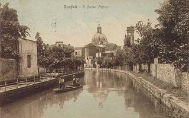
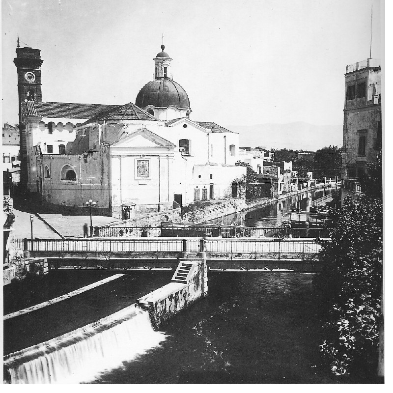
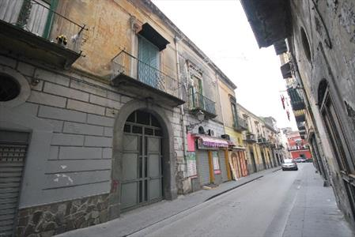

Ne' la tradizione letteraria, ne' gli scavi archeologici eseguiti nella valle del Sarno hanno dato notizia della presenza di un insediamento umano, nell'odierna Scafati, durante la prima età del ferro (IX-VII secolo a.C.). Se si considera che gli scavi eseguiti nella valle in epoche diverse hanno restituito alla luce i sepolcreti di Striano, S. Marzano sul Sarno e S. Valentino Torio, si ha motivo di ritenere che la popolazione del protostorico, nel corso del proprio dislocamento lungo il Sarno, non ritenne opportuno insediarsi nell'area che oggi appartiene al comune di Scafati.
La ragione è da ricercarsi nel rapporto intercorso fra l'area stessa e il primo nucleo abitativo di Pompei, fondato da genti osche dedite al commercio più che all'agricoltura.
Il fiume Sarno era il naturale tratto d'unione fra la costa campana e il suo immediato entroterra; su di essa infatti, già dai tempi della civiltà osca, correvano le imbarcazioni mercantili.

Riferendosi quindi al territorio di Scafati, è lecito dire che, relativamente ai primi segni di attività economica, prima dei campi, fu il fiume. Due avvenimenti politici segnarono però l'estendersi dell'agricoltura verso Scafati: il primo fu conseguenza della politica commerciale di Napoli che orientò le proprie attività verso il retroterra vesuviano, il secondo va collegato a un fenomeno di riversamento dei sanniti più poveri delle montagne verso zone rimaste scoperte.
Durante le guerre sannitiche, Roma legò Nocera ai suoi interessi economici e militari mediante un patto federale vantaggioso, grazie al quale il territorio della confederazione nocerina sarebbe rimasto esente da ogni influenza di legislazione romana e il popolo avrebbe continuato a organizzarsi secondo i tradizionali ordini, senatorio, equestre e plebeo, a garanzia, insomma, di una piena autonomia economica e amministrativa.
Dopo la prima metà del I secolo d.C. il territorio pompeiano continuava a godere dei benefici della feracità del suolo e la popolazione a fruire delle conseguenze degli intensi scambi commerciali con le altre regioni italiche, quando il terremoto del 62 e l'eruzione del 79 vennero a turbare una vita fondata sul lavoro e sull'agiatezza. Nella storiografia locale, tutta la campagna dell'Ager Nucerinus viene associata alla stessa sorte delle campagne pompeiane, ma in realtà le cose dovettero andare in altro modo.
I ritrovamenti effettuati nella zona dimostrano, infatti, che essa costituì una via di scampo, creando dopo qualche tempo i presupposti per la continuazione della vita alla sparuta gente che era riuscita a salvarsi.
La vita economica riprese, quindi, a dispetto di ogni difficoltà, e la produttività agricola crebbe a tal punto da destare le mire dei duchi napoletani durante la dominazione bizantina, a partire dal VI secolo.
La valle continuò a gravitare nell'area bizantina, finchè, nel 601, Arechi, duca di Benevento, l'occupò dopo feroci devastazioni.
Nel 652, Arechi, strappata Salerno al ducato di Napoli, costituì il principato salernitano, mentre Sarno passava sotto la dominazione longobarda.
Il corso del fiume Sarno cessò di essere la linea di delimitazione tra i due principati, entrambi aspiranti a maggior gloria e potenza.
Fu così che il territorio di Scafati rimase ancora assegnato al ducato di Napoli, ma la separazione fra i due stati non garantiva certa una pace sicura alle popolazioni poste lungo la linea di confine.
Nel corso del IX secolo, infatti, alcuni mutamenti politici portarono alla ridefinizione dell'assetto territoriale e dall'anno 848 il territorio di Scafati entrò a far parte, dal punto di vista politico e strategico, della valle del Sarno, passando dalla denominazione bizantina a quella longobarda del principato di Salerno.
Questi anni videro la popolazione della valle fare dura esperienza delle lotte intestine e dell'invasione mussulmana; a difesa delle scorriere saracene venne elevata la torre, vicino al fiume.
Nella prima metà del XII secolo, sul suolo dell'Italia meridionale avevano già messo piede i Normanni e Ruggiero II dominava la scena militare e politica carezzando sogni di grandezza che diventeranno realtà nel 1140, allorquando entrerà trionfalmente in Napoli, dopo duri scontri militari, diventando re di Sicilia e di Puglia, cioè di un potente stato, accentrato e unitario.
Ciò portò sicurezza nelle campagne, perchè determinò la cessazione delle furibonde guerre combattute fra i conti e i principi.
Con l'avvento della dinastia normanna il territorio continuò a essere prevalentemente demaniale (il Catalogus baronum riporta notizia di un Signore a Lettere e di un altro a Nocera, e nulla più) e tale rimase fino all'avvento degli Angioini. L'assenza di altri baroni nella valle conferma l'potesi della demanialità della zona, che era sottoposta a particolare amministrazione per ciò che concerneva il rendimento dei terreni e la loro concessione, ma a nessuna soggezione politica.
Quando quella stessa terra si avviò a ridiventare coltivabile e una popolazione iniziò a fermarsi per lavorarla e abitarvi, fu donata a Riccardo Filangieri da Papa Innocenzo III, divenuto in quegli anni unico e vero padrone dell'Italia meridionale. Era l'anno 1254. Estintasi la famiglia Filangieri, la terra di Scafati ritornò al regio demanio e segnatamente alla corona angioina, che si trovava già stabilmente insediata nel Meridione, nel 1266. La nuova situazione non fu certo migliore: alla tolleranza degli Svevi si sostituì un'ostinata e crudele intrasigenza che impedì all'Italia meridionale e alla Sicilia di raggiungere lo splendore che aveva cominciato ad annunciarsi sotto la caduta dominazione.
La presenza di una monarchia stabile a Napoli, però, determinò miglioramenti nelle condizioni di vita nella città e un nuovo e più intenso rapporto con la vicina campagna.
L'Agro Nocerino-Sarnese, per essere molto fertile, oltre che vicino alla capitale, si trovò investito di più larghe e frequenti richieste di vettovagliamento, il che dette impulso allo sviluppo e all'incremento dell'agricoltura che dovette rispondere anche alle sollecitudini del commercio.
Il nuovo signore di Scafati fu un tal Radulfo di Soissons, conte delle terre di Loreto; alla sua morte, nel 1272, la sua corte ne riassorbì i possedimenti. Nel 1284, Carlo II d'Angiò concesse la terra di Scafati al monastero di S. Maria di Realvalle come un feudo nobile, con la torre, gli uomini, i diritti, l'esercizio della giurisdizione, le ragioni e le pertinenze, a condizione che gli abati, in cambio del beneficio ricevuto e in riconoscimento della grazia fatta loro, si sentissero obbligati a corrispondere al donatore e ai suoi eredi, una proporzionata quantità di orzo per mantenere il cavallo e il palafreniere.
L'abbazia tenne il feudo sino ad alcuni anni prima del 1355, quando la regina Giovanna I lo concesse al Gran Siniscalco del Regno, Niccolò Acciaiuoli.
Da qui il feudo tornò nuovamente nelle mani dell'abbazia (tralasciamo tutte le altre infeudazioni),alla quale fu tolto definitivamente nel 1464 per donazione fattane da papa Pio II a suo nipote Antonio Piccolomini, liberatore della terra scafatese per conto di Alfonso d'Aragona. Con quest'ultimo passaggio si chiuse la lunga serie di infeudazioni cui fu esposta la terra di Scafati; uomini e vassalli furono sottoposti al dominio di una delle più illustri e più potenti famiglie dell'Italia centrale e meridionale, che li governò fino all'anno 1806.
Intorno all'anno 1532 si verificarono alcuni fattori favorevoli al miglioramento dell'economia agricola: ai terreni vulcanici fertilissimi, adatti alle colture campestri e seminatorie, si aggiunsero quelli ricavati dalla riduzione dell'area boschiva, rendendo così possibile l'estendersi dell'area messa a coltura; furono impiantati modesti opifici (gualchiera, romiera, polverificio) e mulini feudali in località Bottaro e fu aperta la strada regia, lungo la quale si intensificò il traffico commerciale.
Erano i segni della nuova mentalità rinascimentale dell'uomo intraprendente e dell'influenza economica e finanziaria della scoperta dell'America, seguita dal rialzo dei prezzi e dalla rivalutazione dei terreni.
Scafati ne fu direttamente investita e si giovò di altri fattori: la decadenza dell'abbazia di Realvalle e l'impianto di alcune colture tessili, anche se in modeste quantità.
Messi insieme, questi fattori fecero sì che il territorio scafatese assumesse un 'importanza mai avvertita prima e venisse a trovarsi al centro dei commerci e dei transiti nella valle del Sarno, nel momento in cui i traffici si incrementavano e il passaggio delle merci sul fiume avvertiva un proficuo sviluppo.
Il traffico e il commercio richiamarono, sul posto più vicino al fiume, nuova gente e altra popolazione, e avrebbero di lì a poco dato inizio a una floridezza economica senza precedenti, se il signore di Scafati non avesse modificato l'alveo del fiume, causando il disastroso impaludamento di buona parte dei terreni e la recrudescenza della malaria.
Connessa all'incremento demografico ed economico fu l'estensione dell'insediamento urbano che, dalla vecchia zona denominata Vaglio e Fontana, presso la chiesetta di S. Giacomo e della Croce Santa, si prolungava verso occidente al di là del fiume, a via delle Mura e via dei Mulini. Al di quà del fiume si trovava la chiesa parrocchiale e la congrega laicale di S. Maria delle Vergini.

Il centro storico, che ancora oggi viene chiamato Vitrare, cominciò invece a sorgere e a svilupparsi nella seconda metà del XVIII secolo. Infatti il fiscalismo spagnolo, la degradazione ecologica della valle da Scafati a Sarno, il calo della popolazione e le epidemie del secolo, non poterono certo incoraggiare qualsivoglia sviluppo urbanistico.
Nel biennio 1647-48 la valle fu nuovamente teatro della guerra che si combattè fra le forze popolari e quelle baronali come riflesso immediato della rivolta di Masaniello, scoppiata pochi mesi prima a Napoli.
In questa congiuntura, la torre posta sul fiume a Scafati fu nuovamente considerata punto strategico per il mantenimento delle vie di Calabria e, conseguentemente, contesa da ambedue le frazioni in lotta.
La sua caduta in mano alle forze baronali segnò l'inizio di un triste periodo di rassegnata sottomissione del ceto rurale alla volontà dei baroni.
L'ideale rivoluzionario della repubblica partenopea del 1799, nell'Agro e a Scafati in particolare, ebbe vita brevissima.
Fatta eccezione di uno sparuto gruppo, il popolo e la classe intellettuale rimasero indifferenti o volutamente estranei al movimento delle idee, senza lasciarsi travolgere dai fatti immediati. In questa zona la repubblica fu una ventata insignificante che non vide più rivivere l'ardore e il coraggio testimoniati dall'aspra guerra contadina del tempo di Masaniello. Pochi anni dopo, prolungata la legge eversiva della feudalità, la terra della vicina S. Pietro cessò di essere autonoma; la popolazione venne aggregata a quella di Scafati e affidata alla giurisdizione dell'amministrazione comunale dello stesso. Era l'anno 1810. In questo secolo va collocata la nascita dell'industria tessile scafatese.
La tennero a battesimo nuove leggi doganali, le nuove tariffe e una serie di fattori naturali che, unitamente alla produzione del cotone, del lino e della canapa, fecero rinascere sul territorio l'attività industriale.
Primo protagonista fu un cittadino svizzero, Giovan Giacomo Meyer che, come altri suoi concittadini vide nel regno di Napoli l'unica via di scampo al sicuro disastro dell'industria serica di Zurigo e a quella cotoniera di S. Gallo.